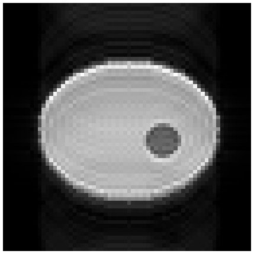

Note
Go to the end to download the full example code.
4. A reconstruction plugin#
The raw data a scanner’s reconstruction client streams carry the samples of each readout and little else: the encoding counters and flags it records describe the interpreter’s loop, not the sequence. The reconstruction proxy replaces them with what the sequence states, then hands the readouts to a reconstruction plugin grouped into reconstruction units. This lesson acquires a series of the design from the first lesson, enriches it, and reconstructs it with a plugin of its own. The enrichment is described in Raw-data enrichment and routing.
Learning objectives
Record a series as a scanner client sends it, from a stored design.
Read what
SequenceTable,enrich_header()andenrich_acquisition()add to the stream: encoding spaces, counters, flags and, where needed, a trajectory and a phase.Write a
ReconPluginand run it on the series offline, as the proxy’s workers run it.
The previous lesson walked the cache this series is played from.
The design and the series#
The protocol of the first lesson resolves to the same design, so generating
it again returns the stored one. acquire() samples
an analytic phantom of four coils along the trajectory the cache plays, and
record() writes the series to an ISMRMRD file as the
scanner’s client sends it: the design identifier in the header, and the
samples of each readout.
import tempfile
from pathlib import Path
import ismrmrd
import numpy as np
from pulserver import virtual
from pulserver.protocol import UIParam, format_values, parse_listing
limits = """[Limits]
B0: 3.0
max_grad: 40
grad_unit: mT/m
max_slew: 150
slew_unit: T/m/s
[Limits End]
"""
store = Path(tempfile.mkdtemp())
console = virtual.Console(plugins=[], limits=limits, store=store)
listing = console.design("list", "gre2d")["reply"]
entries = parse_listing(listing[listing.index("[Protocol]") :])
values = {key: entry.value for key, entry in entries.items()}
values.update({UIParam.NX: 64, UIParam.NY: 64})
design = console.design("generate", "gre2d", format_values(values, entries))["design"]
sequence = store / design / "sequence.seq"
phantom = virtual.Phantom(
[
virtual.Ellipse((0.0, 0.0, 0.0), (0.08, 0.06)),
virtual.Ellipse((0.03, 0.01, 0.0), (0.015, 0.015), intensity=-0.5),
],
coils=4,
)
series = store / "series.h5"
print(virtual.record(series, design, virtual.acquire(sequence, phantom)), "readouts")
64 readouts
As received, the header’s encoding space holds placeholder sizes, and every acquisition the same encoding counters.
dataset = ismrmrd.Dataset(str(series), "dataset")
header = ismrmrd.xsd.CreateFromDocument(dataset.read_xml_header())
received = [
dataset.read_acquisition(i) for i in range(dataset.number_of_acquisitions())
]
dataset.close()
matrix = header.encoding[0].encodedSpace.matrixSize
print(f"encoded matrix {matrix.x} x {matrix.y}")
print("phase-encoding counters:", {a.idx.kspace_encode_step_1 for a in received})
encoded matrix 1 x 1
phase-encoding counters: {0}
Enrichment#
The proxy finds the design the header names and tabulates its readouts in play order. Each row gives one acquisition its encoding counters, its flags and its encoding space; the header receives the encoding spaces, matrix and field of view the sequence defines.
from pulserver.proxy import SequenceTable, enrich_acquisition, enrich_header
table = SequenceTable.read(sequence)
enrich_header(header, table)
for row, acquisition in enumerate(received):
enrich_acquisition(acquisition, table, row)
space = header.encoding[0]
print(
f"encoded {space.encodedSpace.matrixSize.x} x {space.encodedSpace.matrixSize.y}, "
f"reconstructed {space.reconSpace.matrixSize.x} x {space.reconSpace.matrixSize.y}"
)
print("LIN of the first readouts:", [a.idx.kspace_encode_step_1 for a in received[:4]])
print(
"last readout closes the slice:", received[-1].isFlagSet(ismrmrd.ACQ_LAST_IN_SLICE)
)
print("trajectory dimensions:", received[0].trajectory_dimensions)
encoded 128 x 64, reconstructed 64 x 64
LIN of the first readouts: [0, 1, 2, 3]
last readout closes the slice: True
trajectory dimensions: 0
The readouts sample the flat top of the readout gradient, so they are placed by their counters and carry no trajectory. Nor does any carry a phase: the field-of-view offset of a design is played as frequency and phase offsets, which are the whole of its phase on a flat top. The proxy computes a phase only where the readout gradient varies during sampling, which a Tour treats (Field-of-view offset and the proxy phase).
shifted = SequenceTable.read(sequence, fov_offset_m=(0.02, 0.0, 0.0))
print("phase applied at a 20 mm offset:", shifted.readout_phase_modulation(0))
phase applied at a 20 mm offset: None
A plugin#
A ReconPlugin declares how readouts are grouped
into reconstruction units and when a unit closes, here at
LAST_IN_SLICE, a flag enrichment supplies, and reconstructs each unit in
recon(). The unit’s k-space is
(coils, phase encodes, readout), its readout oversampled; the image is
cropped to the reconstruction matrix, image_shape.
from pulserver import recon
from pulserver.mrd import AcquisitionFlag
class Fft(recon.ReconPlugin):
def __init__(self):
super().__init__(triggers={"imaging": AcquisitionFlag.LAST_IN_SLICE})
def recon(self, context, branch, data): # noqa: ARG002
kspace = data.data.kspace
image = np.fft.fftshift(
np.fft.ifft2(np.fft.ifftshift(kspace, axes=(-2, -1))), axes=(-2, -1)
)
combined = np.sqrt((np.abs(image) ** 2).sum(axis=0))
rows, columns = data.data.image_shape[-2:]
top = (combined.shape[0] - rows) // 2
left = (combined.shape[1] - columns) // 2
return recon.ReconResult(combined[top : top + rows, left : left + columns])
run() reconstructs a recorded series in
this process through the same hooks a worker drives; with store it
enriches the series from its design first, as the proxy does.

1 image of (64, 64)
A plugin file holds the class and a module-level PLUGIN instance; the
proxy loads it by name from its plugin directories
(Reconstruction plugins). The fifth lesson tests a whole
acquisition on the virtual scanner.
Total running time of the script: (0 minutes 0.630 seconds)